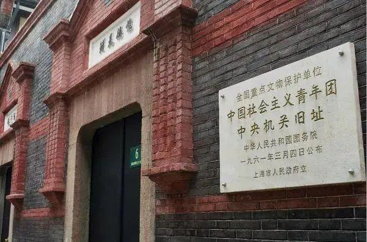
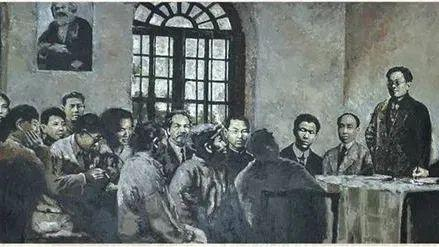

庆祝中国共产主义青年团成立100周年
纪念是永恒的主题，在任何时代，任何国家，我们都通过纪念来回忆起那段过往。今天是中国共青团成立100周年。100年，凝聚的是几代人的心血，100年来，无数先辈栉风沐雨，披荆斩棘，将中国共青团从时代洪流中淘洗，磨练，使他能够从容面对新时代的考验，并在新时代中与时俱进，提升自我。
了解更多主要负责人
建团百年，重大历史事件

共青团的成立与发展
1921年7月，中国共产党正式成立前，各地共产主义者在建立党的早期组织——共产主义小组的过程中，就已经先后建立了社会主义青年团。中国共产党正式成立后，中国革命和青年运动迈进了一个崭新的阶段。党的一大研究了在各地建立和发展社会主义青年团作为党的预备学校问题，决定了吸收优秀团员入党的办法。
《先驱》创刊
1922年1月15日，中国社会主义青年团机关报《先驱》创刊。创刊号至第三期由北京团组织主办，邓中夏、刘仁静任主编。第四期起迁往上海。《先驱》的出版，对扩大社会主义青年团的影响，加强团员马克思主义教育，统一全团思想，起了积极的作用。随着各地社会主义青年团的迅速发展，迫切需要从思想上、组织上加强和巩固自己的组织。

中国社会主义青年团第一次全国代表大会
1922年5月5日，就在这一天，中国社会主义青年团第一次全国代表大会在广州市东园隆重开幕。出席会议的代表和来宾总人数达1500多人。大会共开了6天，举行了8次会议，于5月10日胜利闭幕。会议完成了青年团的创建工作，通过了团的《纲领》和《章程》，并且一致决议中国社会主义青年团加入青年共产国际。